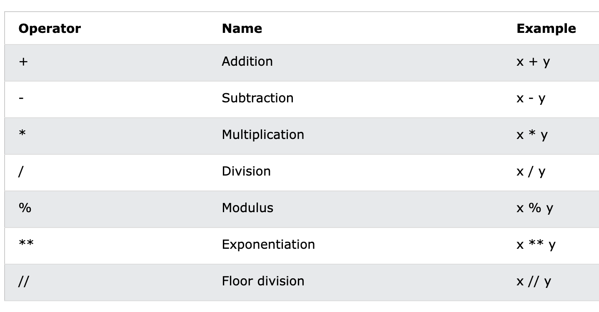
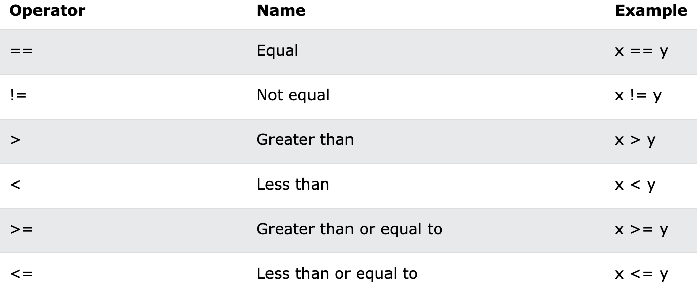
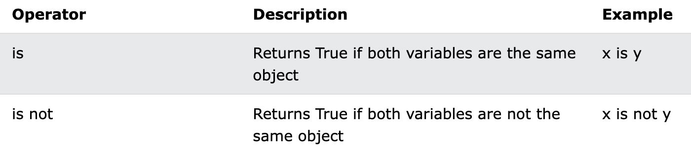
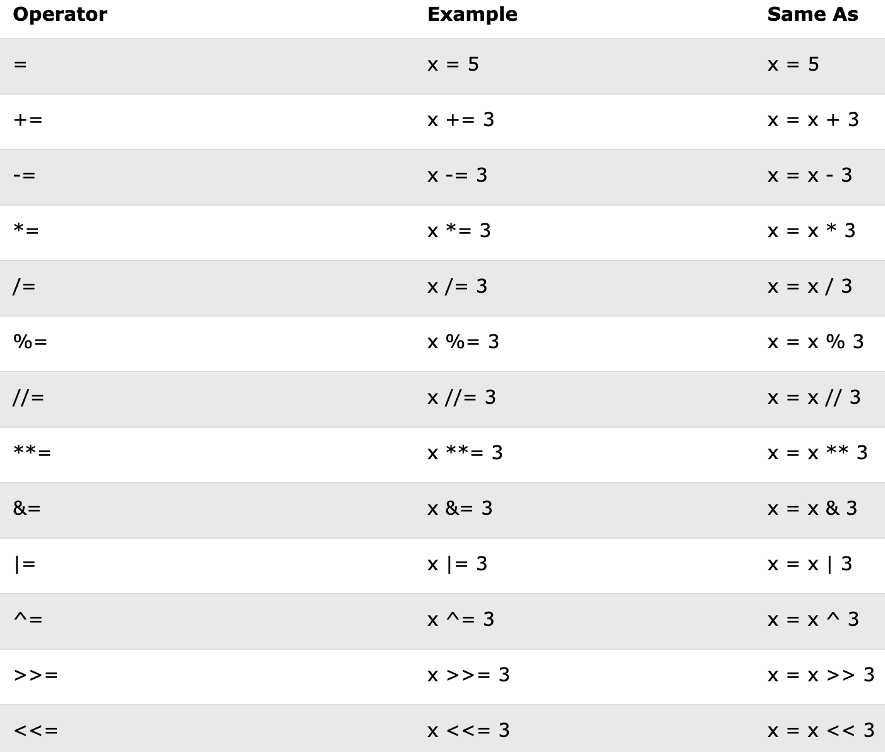
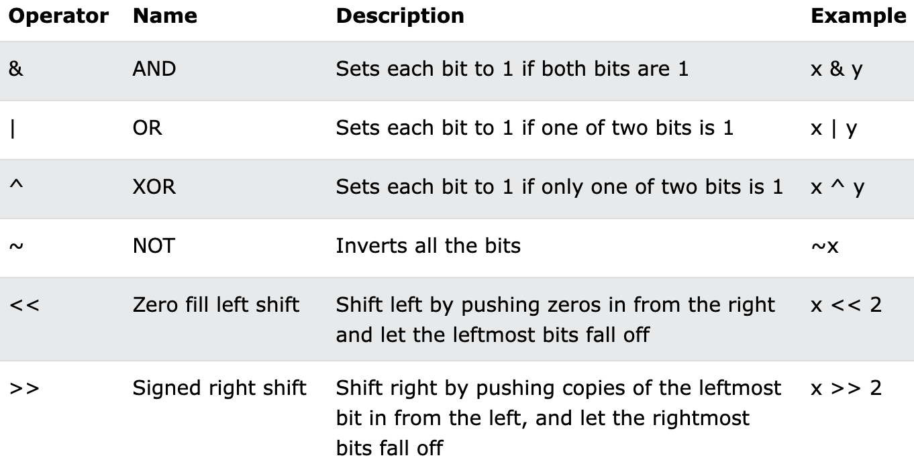
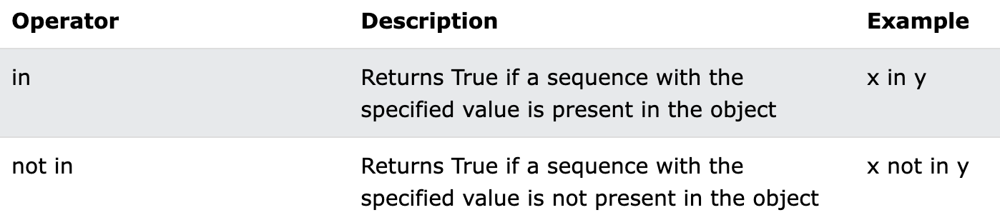

Python is a high-level programming language that is known for its simplicity and readability. It is used for a variety of applications such as web development, scientific computing, data analysis, and artificial intelligence.
Python works by interpreting the code written in the language and executing it on the computer. It is an object-oriented language, which means that it is based on the concept of objects, which can have properties and methods that can be used to perform tasks.
To install Python, you can download the installer from the official Python website https://www.python.org/downloads/ and follow the instructions for your operating system.
In Python, syntax refers to the set of rules that define how the language is structured and how programs are written.
Some of the key syntaxes in Python:
Variables, Datatypes, Print Statements, Comments, Indentation
Variables are used to store data in Python. They are created using the assignment operator (=) and can hold different data types such as numbers, strings, and booleans.
# Example code for variables
x = 5
y = "Hello World"
z = True
Python has several built-in data types including numbers, strings, lists, tuples, and dictionaries. Each data
type has its own set of operations and methods.
In Python, data types are used to classify and represent different
types of data that can be stored in variables. Here are some of the main data types in Python:
The print() function is used to display output in Python. You can pass different data types as arguments to the function.
# Example code for print statements
x = 5
print(x) # Output: 5
y = "Hello World"
print(y) # Output: Hello World
Comments are used to explain code and make it more readable.
In Python
# Example code for comments
# This is a single-line comment
'''
This is a
multi-line
comment
'''
Arithmetic operators are used to perform mathematical operations in Python. These include addition (+),
subtraction (-), multiplication (*), division (/), modulus (%), and exponentiation (**).

Comparison operators are used to compare values in Python. These include equal to (==), not equal to (!=),
greater than (>), less than (<), greater than or equal to (>=), and less than or equal to (<=).

Logical operators are used to combine and manipulate boolean values in Python. These include and,
or,
and not.

Assignment operators are used to assign values to variables in Python. They are shorthand notations that combine an arithmetic operation with an assignment operation. The most common assignment operator is the equal sign (=), which assigns a value to a variable.

Bitwise operators are used to perform operations on the binary representation of numbers. They are useful in situations where you need to manipulate the individual bits of a number.

Membership operators are used to test whether a value is a member of a sequence, such as a string, list, or tuple. There are two membership operators in Python.

If/else statements are used to make decisions in Python. The syntax for an if/else statement is as follows:
if condition:
# code to be executed if condition is True
else:
# code to be executed if condition is False
Here's an example:
x = 5
if x > 10:
print("x is greater than 10")
else:
print("x is less than or equal to 10")
Loops are used to execute a block of code repeatedly. The two types of loops in Python are the for loop and the while loop.
The syntax for a for loop is as follows:
for variable in sequence:
# code to be executed for each iteration
Here's an example:
for i in range(5):
print(i)
The syntax for a while loop is as follows:
while condition:
# code to be executed while condition is True
Here's an example:
i = 0
while i < 5:
print(i)
i += 1
Functions are a way to encapsulate a block of code so that it can be reused. The syntax for defining a function is as follows:
def function_name(parameters):
# code to be executed
return value
Here's an example:
def add_numbers(x, y):
return x + y
result = add_numbers(3, 5)
print(result)
Once a function is defined, it can be called multiple times with different arguments. The syntax for calling a function is as follows:
result = function_name(arguments)
Here's an example:
result1 = add_numbers(3, 5)
result2 = add_numbers(7, 9)
print(result1)
print(result2)
Functions can take one or more parameters, which are input values to the function. Functions can also return values, which are output values from the function. Here's an example of a function that takes two parameters and returns a value:
def multiply_numbers(x, y):
return x * y
result = multiply_numbers(3, 5)
print(result)